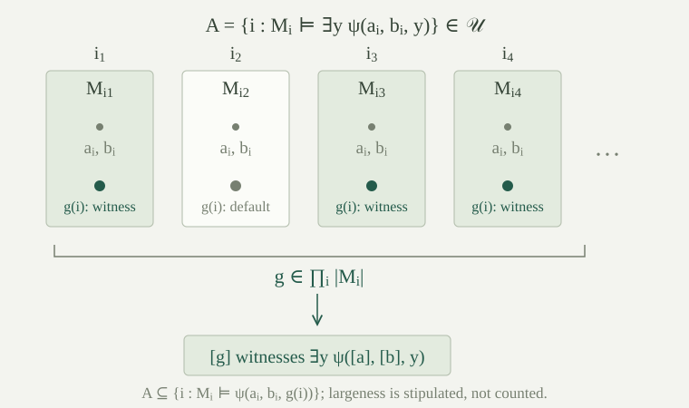

Fix a set-sized first-order language \(L\), a set \(I\), an ultrafilter \(\mathcal U\) on \(I\), and a nonempty \(L\)-structure \(M_i\) for each \(i\in I\). The domains may be different. Work with the axiom of choice in the background. A set of indices is called large when it belongs to \(\mathcal U\). Since the ultrafilter is proper, \(I\ne\varnothing\).
The product \(P=\prod_{i\in I}|M_i|\) consists of functions \(f\) choosing an element \(f(i)\in|M_i|\) at each index. Choice makes this product nonempty. Define
This is an equivalence relation. Reflexivity uses that \(I\) is large, and symmetry follows from symmetry of equality. For transitivity, the intersection of the large equality sets for \(f,g\) and \(g,h\) is contained in the equality set for \(f,h\). Filter closure makes that last set large. Write \([f]\) for the class of \(f\). These classes will be the elements of the new structure.
The ultraproduct \(M=\prod_{\mathcal U}M_i\) has domain \(P/{\sim_{\mathcal U}}\). For an \(r\)-ary function symbol \(F\) and an \(r\)-ary relation symbol \(R\), put
For arity zero, the first rule interprets a constant by the sequence of its interpretations, \(c^M=[i\mapsto c^{M_i}]\). The second interprets a nullary relation, a truth-valued symbol, by the set of indices where it is true.
These rules are independent of representatives. If \(f_j\sim_{\mathcal U}g_j\) for every \(j<r\), intersect their finitely many equality sets to obtain a large set \(E\). On \(E\), the two input tuples coincide. Their function outputs therefore coincide on \(E\), so their classes are equal. The two relation truth sets agree on \(E\); intersecting either with \(E\) and using upward closure shows that one is large exactly when the other is. For \(r=0\), the intersection is \(I\), so the argument also includes nullary symbols.
Use the scoped notation for free variables and available bound placeholders. Let \(a\) assign a member of \(P\) to each free variable, and let \(b=(b_0,\ldots,b_{n-1})\) be a tuple from \(P\) for the available placeholders. Define the coordinate assignment and tuple by \(a_i(x)=a(x)(i)\) and \(b_i=(b_0(i),\ldots,b_{n-1}(i))\). Write \([a]\) and \([b]\) for the assignment and tuple of their equivalence classes.
For every term \(t\) in this context,
Induct on the term. A free variable has the assigned class, and an available placeholder has its assigned tuple entry. A function application follows by applying the induction hypotheses to its arguments and using the definition of the function in the ultraproduct. This includes a constant, whose argument tuple is empty.
Let \(\mathcal U\) be an ultrafilter on \(I\), let \((M_i)_{i\in I}\) be a family of nonempty structures in the same set-sized first-order language \(L\), and put \(M=\prod_{\mathcal U}M_i\).
For every scoped \(L\)-formula \(\varphi\), every assignment \(a\) of representative functions to its free variables, and every representative tuple \(b\) for its available placeholders,
In particular, for every sentence \(\theta\),
Induct on formulas, allowing every context size and every assignment and tuple. For atomic equalities, reduces the claim to the definition of \(\sim_{\mathcal U}\). For relation applications, use the same term lemma and the quotient relation's definition. Falsity corresponds to the empty set, which is not large.
For a conjunction, its truth set is the intersection of its two truth sets. An intersection is large exactly when both sets are large. For negation, its truth set is the complement of the original truth set. The ultrafilter complement rule says that this complement is large exactly when the original is not. These steps also give implication, since \(\psi\to\chi\) is equivalent to \(\neg(\psi\land\neg\chi)\).
Consider an existential formula whose body \(\psi\) has one additional placeholder \(z_n\). If the ultraproduct has a witness \([g]\), induction says that
This set is contained in \(A=\{i:M_i\models\exists z_n\,\psi(a_i,b_i)\}\), so \(A\) is large.
Conversely, suppose \(A\) is large. For each \(i\in A\), choose a witness \(g(i)\in|M_i|\) to the body. For \(i\notin A\), choose any domain element. More explicitly, choose one default element of every nonempty domain first, then use it at indices outside \(A\). Choice supplies both families. The resulting \(g\) belongs to \(P\), and the body's truth set with this witness contains \(A\), so is large. Induction makes \([g]\) a witness in the ultraproduct. The original free-variable assignment stays fixed; the witness is appended to the bound tuple. Finally, \(\forall z_n\,\psi\) is equivalent to \(\neg\exists z_n\neg\psi\), giving the universal step and completing the induction.
Every assignment of classes can be represented in this way by choosing representatives. In particular the theorem allows parameters from the ultraproduct, rather than just sentences with no parameters.

Could we replace the ultrafilter complement rule in the proof by the rules of an arbitrary proper filter?
No. In the cofinite filter on \(\mathbb N\), neither the even numbers nor their complement, the odd numbers, is large. Thus “the original truth set is not large” does not imply “its complement is large.” A proper filter supplies finite intersections, but not the complement decision required in the negation step.
Let \(T\) be a set of \(L\)-sentences, and let \(I=[T]^{<\omega}\) be its set of finite subsets, including the empty subset. For each finite \(S\subseteq T\), put
The cones have the finite intersection property and extend to an ultrafilter containing every cone. If each finite subset of \(T\) has a nonempty model, a family of such models can be chosen with one model for every index.
These cones have the finite intersection property: \(C_\varnothing=I\), \(C_S\cap C_R=C_{S\cup R}\), and \(S\in C_S\). Hence their generated filter is proper, and ultrafilter extension supplies an ultrafilter \(\mathcal U\) containing every cone. In particular, \(\{\Delta:\theta\in\Delta\}=C_{\{\theta\}}\) is large for every \(\theta\in T\).
Suppose each finite \(\Delta\subseteq T\) has a nonempty model. We will choose one model \(M_\Delta\models\Delta\) for each index. This uses ordinary choice from sets, rather than a choice from a proper class of models. To see why, let \(\kappa=\max(\aleph_0,|L|)\). The downward Löwenheim–Skolem bound gives a model of each \(\Delta\) of size at most \(\kappa\). Transport it by an isomorphism so that its domain is a nonempty subset of \(\kappa\). All \(L\)-structures on these subsets form a set: their functions and relations are sets of tuples of elements of \(\kappa\), indexed by the set of symbols. For each \(\Delta\), the suitable codes are therefore a nonempty subset of this one set. Choice now supplies the required set-indexed family.
Let \(L\) be any set-sized first-order language, and \(T\) a set of \(L\)-sentences. Then \(T\) has a nonempty model if and only if every finite subset of \(T\) has a nonempty model.
A model of \(T\) satisfies each finite subset. Conversely, choose the models \(M_\Delta\) and the ultrafilter containing the finite cones as in . Form their ultraproduct \(M=\prod_{\mathcal U}M_\Delta\). For each \(\theta\in T\),
The left-hand side is large, so the right-hand side is large. By , \(M\models\theta\). This holds for every axiom, hence \(M\models T\). The ultraproduct is nonempty because the product of its nonempty domains is nonempty.
The proof also covers \(T=\varnothing\): then \(I=\{\varnothing\}\), and its empty cone is the whole nonempty index set. No countability assumption is used. This extends the countable-language compactness theorem as a semantic assertion about existence of models. It makes no additional claim here about a proof calculus for uncountable languages.
The separate finite-vocabulary argument combines this semantic theorem with countable-language completeness and proof transport to obtain deductive completeness for arbitrary set-sized languages.
When all factors are the same structure \(A\), the ultraproduct is called the ultrapower \(A^I/\mathcal U\). For \(a\in|A|\), let \(c_a(i)=a\) for every \(i\in I\). The diagonal map is
This specified map is an elementary embedding: for every formula and every finite tuple \(\bar a\) from \(A\),
For constant representative functions, every factor evaluates the formula with the same parameters \(\bar a\). Its truth set is \(I\) when the formula is true in \(A\), and empty otherwise. Exactly the first of these sets is large. Łoś's theorem gives the displayed equivalence. The map is injective: if \(a\ne b\), the equality set of \(c_a,c_b\) is empty, so their classes differ. Atomic instances also show preservation of functions and relations. Thus the assertion concerns the particular map \(a\mapsto[c_a]\), not merely the existence of some elementary embedding.
In particular, \(A\) and its ultrapower satisfy exactly the same sentences. Identifying \(A\) with the image of \(d\) makes that image an elementary substructure. The image can be proper, as the following example shows.
Take the structure \((\mathbb N,<)\), let \(I=\mathbb N\), and let \(\mathcal U\) be a nonprincipal ultrafilter on \(\mathbb N\). Put \(h(n)=n\) and \(H=[h]\) in the ultrapower. Then \(d(k)<H\) for every \(k\in\mathbb N\), where \(d(k)=[n\mapsto k]\) is the diagonal map. In particular, \(H\notin d[\mathbb N]\).
For every \(k\in\mathbb N\),
is cofinite, hence large. The quotient relation therefore gives \(d(k)<H\) for every \(k\). In particular \(H\) is outside the diagonal image: if \(H=d(k)\), this would give \(d(k)<d(k)\), impossible since the ultrapower satisfies the strict-order axioms by Łoś.
There is no conflict with the fact that every element of \(\mathbb N\) is a natural number. The statement “this element exceeds every member of the diagonal image” compares the ultrapower with an externally specified subset. It is not a first-order formula of the original order language naming all standard natural numbers at once. The ultrapower still agrees with \((\mathbb N,<)\) on every sentence of that language.
Use the arithmetic structure \(\mathbb N_{\mathrm A}=(\mathbb N,0,S,+,\cdot)\) as every factor, with \(S(n)=n+1\). Let \(\mathcal U\) again be a nonprincipal ultrafilter on \(\mathbb N\), and write \(M=\mathbb N_{\mathrm A}^{\mathbb N}/\mathcal U\). Its underlying quotient consists of the same sequence classes as in , but it now interprets all four arithmetic operations:
The coordinate definitions are independent of representatives by the construction of the ultraproduct structure. This gives an explicit nonstandard model satisfying every arithmetic sentence true in the natural numbers, and hence every axiom of Peano arithmetic, including every first-order induction instance with parameters.
For an arithmetic sentence \(\sigma\), every factor has the same truth value. Its truth set is therefore all of \(\mathbb N\) or the empty set. Łoś's theorem gives
In particular \(M\models\operatorname{Th}(\mathbb N_{\mathrm A})\). The ordinary natural numbers satisfy PA, so each PA axiom transfers. A universally closed induction instance allows any values of its parameter variables in \(M\), including nonstandard values: transfer is not restricted to standard parameters.
The diagonal map \(d(n)=[i\mapsto n]\) is an elementary embedding in the full arithmetic language. It sends \(0\) to \(0^M\) and commutes with successor, addition and multiplication. Induction on the external natural number \(n\) consequently gives
where \(\overline n^{\,M}\) is the interpretation of the numeral obtained by applying successor \(n\) times to zero. Thus the diagonal image is exactly the standard copy of the natural numbers inside \(M\).
It is a proper copy. The identity sequence still gives \(H=[i\mapsto i]\). Equality \(H=d(n)\) would say that the singleton \(\{i:i=n\}\) is large. A nonprincipal ultrafilter contains no finite set, so this is impossible for every standard \(n\). Hence \(H\) is not the interpretation of any numeral, proving that this particular arithmetic structure is nonstandard.
Finally, the standard copy in any nonstandard PA model is not definable with parameters. Indeed, if an arithmetic formula with a fixed finite parameter tuple defined this proper subset, it would hold at zero and be closed under successor. Its own PA induction instance would then force it to hold everywhere, a contradiction. The externally described standard copy is therefore a proper elementary substructure without being a definable subset.
What happens when the ultrafilter concentrates on one index, or when the original structure is finite?
If \(\mathcal U\) is the point ultrafilter at \(i_0\), then \([f]\mapsto f(i_0)\) is an isomorphism \(\prod_{\mathcal U}M_i\cong M_{i_0}\). Indeed, equality of classes is exactly equality at \(i_0\); every element of \(M_{i_0}\) can be extended to a product member using chosen defaults at the other indices; and the definitions of functions and relations reduce to their interpretations at \(i_0\). For an ultrapower this evaluation map is inverse to the diagonal map.
If \(A\) is nonempty and finite, every function \(f:I\to|A|\) has a finite partition of \(I\) into its fibers. The ultrafilter selects one fiber, so \(f\sim_{\mathcal U}c_a\) for its value \(a\). Thus every class is diagonal and \(d\) is an isomorphism, even if \(\mathcal U\) is nonprincipal. Properness in the natural-number example uses both its infinite domain and the particular nonprincipal ultrafilter on \(\mathbb N\); it is not an automatic assertion about all ultrapowers.